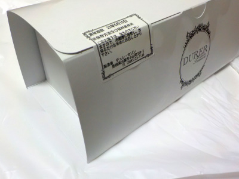
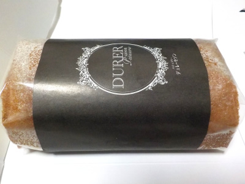
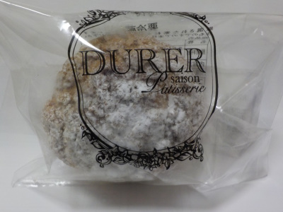

デュレ・セゾンでキャラメルの入ったロールケーキを買いました。
2023/06/09

天神町から小山町に引越しされたみたいです。
ロールケーキは専用の箱に入れてもらえたので、持ち運びが楽でした。
見た目がいいのでお土産に良さそうです。

ロールケーキのスポンジは黄色くて、甘くて濃い味でした。キャラメル入りのクリームもコクと甘さがしっかあって、食べてて満足感があって良かったです。
今日は甘くてクリームたっぷりなものが食べたい気分だったので、いい選択でした。
デュレ・セゾンの小さいシュークリーム
2019/09/21
小さいので買うかどうか迷いました。
シュークリームは大きくてクリームいっぱいが好きです。

大きさは小さいですがシュークリームの中にクリームがめいっぱい入っていました。
食べる時にクリームが溢れそうでした。これだけクリームがあったら満足出来るかな。
シュー生地に弾力があってモチモチしてました。これが一番印象に残りました。
以前にあった洋菓子やさん
【ラ・セゾン洋菓子店】の場所（島根県出雲市天神町884-1）にできたお店です。